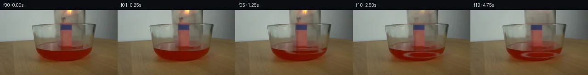

![首帧]()

Round 00
2026-11-05T08:26:59.158460+00:00像素候选变化代码 +183/−0inspection 更新
pixels 518c9a77613f196c · code 17bd62c62b23a67f
查看本轮 generate.py 真实 diff
--- previous/generate.py
+++ current/generate.py
@@ -0,0 +1,183 @@
+from pathlib import Path
+
+import numpy as np
+from PIL import Image, ImageDraw, ImageFilter
+
+import artifact_io
+
+
+ROOT = Path(__file__).resolve().parent
+W, H = 256, 144
+
+
+def smoothstep(x):
+ x = np.clip(x, 0.0, 1.0)
+ return x * x * (3.0 - 2.0 * x)
+
+
+def blend(dst, src, alpha):
+ """Float alpha composite into an RGB uint8 array."""
+ a = np.asarray(alpha, dtype=np.float32)
+ if a.ndim == 2:
+ a = a[..., None]
+ out = dst.astype(np.float32) * (1.0 - a) + src.astype(np.float32) * a
+ return np.clip(np.rint(out), 0, 255).astype(np.uint8)
+
+
+def flame_free_background(base):
+ """Estimate the transparent gray glass that is hidden by the flame."""
+ clean = base.copy().astype(np.float32)
+ x0, x1 = 127, 169
+ for y in range(0, 34):
+ left = np.median(base[y, 121:128].astype(np.float32), axis=0)
+ right = np.median(base[y, 169:177].astype(np.float32), axis=0)
+ for x in range(x0, x1 + 1):
+ q = (x - x0) / (x1 - x0)
+ clean[y, x] = left * (1.0 - q) + right * q
+ # A tiny amount of source texture keeps the reconstruction photographic.
+ clean_im = Image.fromarray(np.uint8(np.clip(clean, 0, 255))).filter(
+ ImageFilter.GaussianBlur(0.45)
+ )
+ return np.asarray(clean_im)
+
+
+def smoke_layer(t):
+ """Return a soft deterministic smoke mask for late frames."""
+ mask = Image.new("L", (W, H), 0)
+ draw = ImageDraw.Draw(mask)
+ age = max(0, t - 12)
+ lift = age * 2.2
+ fade = max(0.20, 1.0 - age / 10.0)
+ strength = int(48 * fade)
+ # Narrow curling traces begin just above the match bundle and drift upward.
+ pts1 = []
+ pts2 = []
+ for k in range(21):
+ y = 29 - lift - 1.18 * k
+ x = 147 + 2.8 * np.sin(0.42 * k + 0.55 * age)
+ pts1.append((float(x), float(y)))
+ x2 = 151 + 2.0 * np.sin(0.36 * k + 1.3 + 0.38 * age)
+ pts2.append((float(x2), float(y + 5)))
+ draw.line(pts1, fill=strength, width=2)
+ draw.line(pts2, fill=int(strength * 0.55), width=1)
+ return np.asarray(mask.filter(ImageFilter.GaussianBlur(1.25)), dtype=np.float32) / 255.0
+
+
+def make_transition_check(frames):
+ """Write a contact sheet of amplified consecutive-frame absolute deltas."""
+ tw, th = 128, 72
+ sheet = Image.new("RGB", (tw * 5, (th + 16) * 4), (18, 20, 24))
+ draw = ImageDraw.Draw(sheet)
+ for i in range(19):
+ delta = np.abs(frames[i + 1].astype(np.int16) - frames[i].astype(np.int16))
+ # Luma-like maximum-channel heat map, amplified but never used as source.
+ v = np.clip(delta.max(axis=2) * 5, 0, 255).astype(np.uint8)
+ heat = np.zeros((H, W, 3), dtype=np.uint8)
+ heat[..., 0] = v
+ heat[..., 1] = (v.astype(np.uint16) * 3 // 5).astype(np.uint8)
+ heat[..., 2] = (v.astype(np.uint16) // 5).astype(np.uint8)
+ thumb = Image.fromarray(heat).resize((tw, th), Image.Resampling.BILINEAR)
+ x = (i % 5) * tw
+ y = (i // 5) * (th + 16)
+ sheet.paste(thumb, (x, y + 16))
+ draw.text((x + 3, y + 2), f"{i:02d}->{i+1:02d}", fill=(225, 230, 238))
+ sheet.save(ROOT / "transition_check.png")
+
+
+def generate():
… diff truncated; 96 more lines …